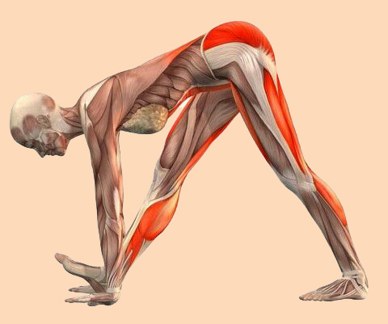

Los músculos son propensos a una serie de lesiones y afecciones que pueden afectar su funcionamiento y causar molestias. A continuación abordaremos las más comunes:
Desgarros musculares: Ocurren cuando las fibras musculares se estiran o rompen debido a una tensión excesiva. Esto puede causar dolor, hinchazón y debilidad muscular. Se pueden clasificar en grados, desde leves hasta graves.
Calambres musculares: Son contracciones involuntarias y dolorosas de un músculo o grupo muscular. Pueden ser causados por una variedad de factores, como deshidratación, fatiga o falta de minerales como el potasio o el calcio.
Esguinces musculares: Involucran el estiramiento o desgarro de un ligamento que es el tejido conectivo que conecta los músculos con los huesos. Estas lesiones pueden causar dolor, inflamación y limitación de movimiento.
Distrofia muscular: Es un grupo de enfermedades genéticas que causan debilidad y degeneración progresiva de los músculos. Cada tipo de distrofia muscular afecta a diferentes grupos musculares y puede manifestarse en la infancia o en la edad adulta.
Atrofia muscular: Es la pérdida de masa muscular y la disminución del tamaño de los músculos debido a la falta de uso, lesiones, enfermedades o afecciones médicas. Generalmente causa debilidad y disminución de la función muscular.
Para cada una de estas condiciones es importante comprender los síntomas, las causas y los tratamientos disponibles. En algunos casos, el reposo, la fisioterapia, los medicamentos o la cirugía pueden ser necesarios para la recuperación. La prevención y el cuidado adecuado de los músculos a través del ejercicio, la hidratación y el calentamiento pueden ayudar a reducir el riesgo de lesiones musculares.

Imagen disponible en Pinterest